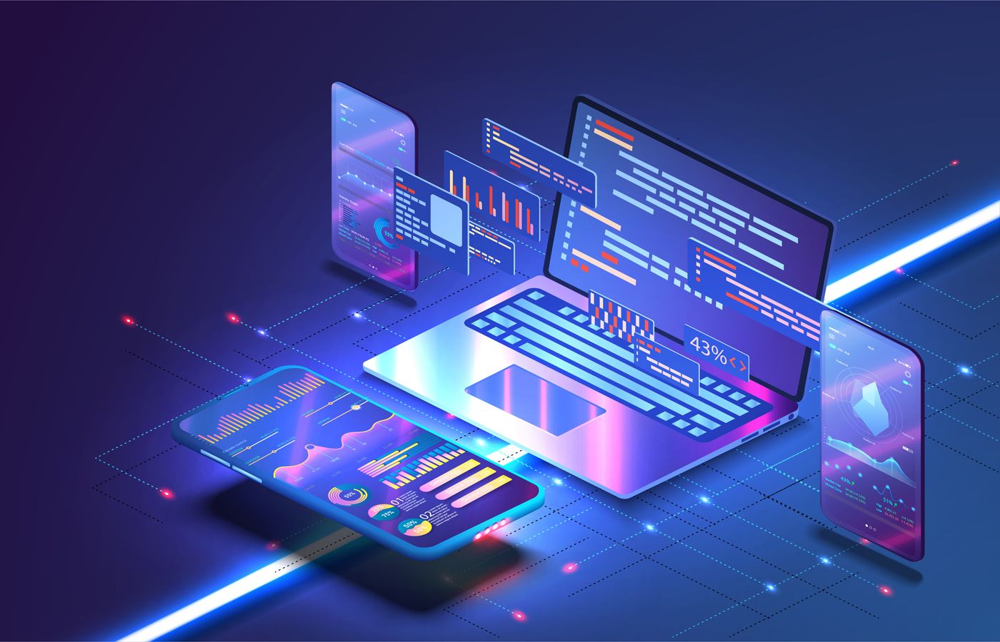
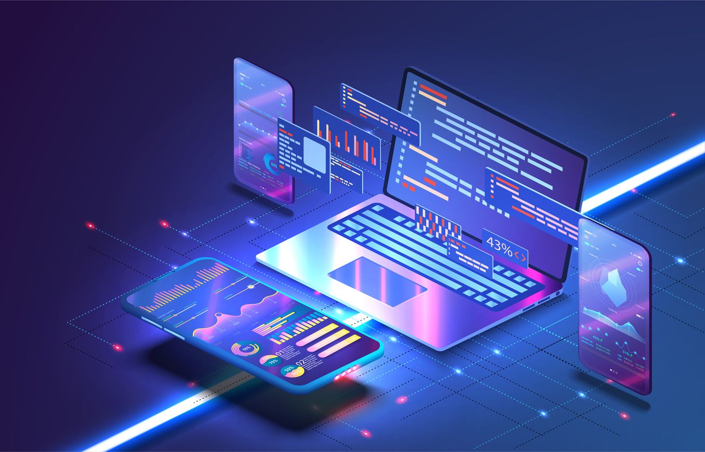
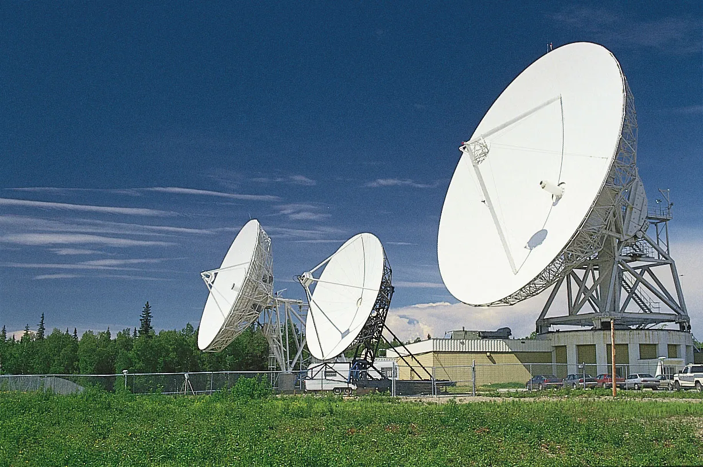
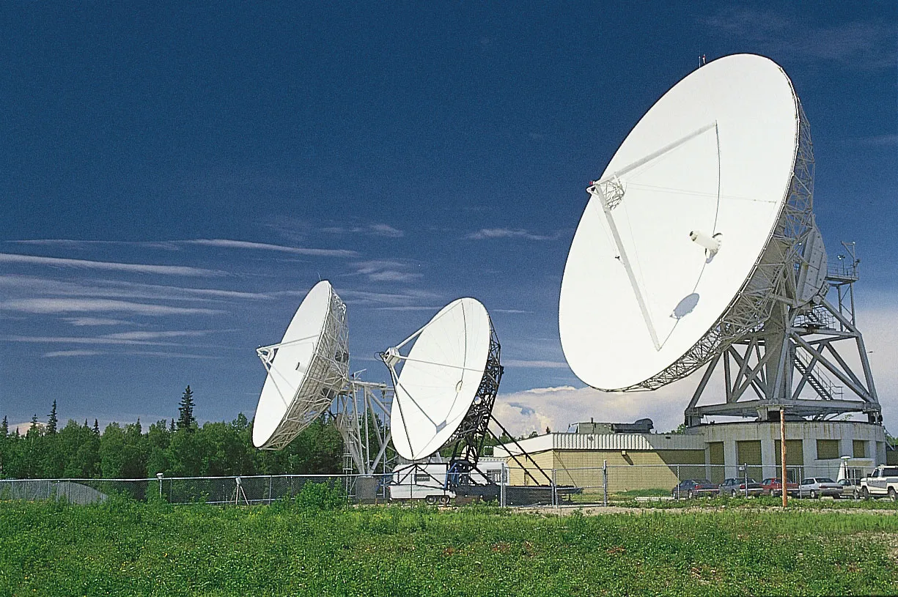

Our Services
Software Development

 

Our software development service is designed to transform your vision into reliable, high-performance digital solutions. We don't just write code – we build intelligent, scalable, and secure applications that align with your business goals. From custom web platforms and mobile applications to enterprise-level systems, our development team delivers solutions that increase efficiency, productivity, and customer engagement across a variety of industries. Using agile methodology, we ensure flexibility, collaboration, and transparency throughout the process, keeping you actively involved from initial concept to final implementation to ensure the final product meets your exact needs. By focusing on performance, usability, security, and long-term sustainability, we create software that not only functions smoothly, but also delivers measurable, lasting results. In addition to development, our service includes ongoing support, updates, monitoring, and optimization to keep your technology one step ahead. Whether you're launching a new idea, modernizing existing systems, or scaling for rapid growth, we provide the expertise to make it happen. With our software development service, your business gets a powerful, future-ready tool for growth, adaptation, innovation, and success in the ever-changing digital landscape.
Medical Equipment


Our medical equipment service is dedicated to providing healthcare facilities with reliable, modern, and patient-centric technologies that improve care and operational efficiency. We don't just deliver devices – we offer fully integrated solutions that are aligned with clinical needs, safety standards, and the latest healthcare innovations. From diagnostic imaging systems and patient monitoring devices to surgical instruments and rehabilitation equipment, our comprehensive offering ensures that medical professionals have the right tools to deliver accurate, timely and effective treatment. Using a streamlined and transparent approach, we manage every stage – from consultation and equipment selection to delivery, installation and ongoing maintenance – ensuring that venues remain fully supported at all times. By focusing on performance, safety, usability and compliance, we provide equipment that not only meets industry regulations, but also empowers healthcare teams to achieve the best possible outcomes for patients. In addition to installation, our service includes ongoing maintenance, upgrades, staff training, and preventative maintenance to keep equipment operating at peak performance. Whether you are expanding your practice, upgrading existing systems, or equipping a new facility, our medical equipment service ensures that you are always prepared to succeed in the evolving healthcare landscape.
Telecommunications
 

Our telecommunications service is designed to provide businesses and organizations with reliable, secure, and high-performance connectivity that drives communication, collaboration, and growth. We don't just deliver networks – we create customized solutions that are tailored to your specific needs, providing seamless voice, data and internet services across all operations. From enterprise-grade phone systems and cloud-based communications platforms to high-speed internet and secure data networks, our comprehensive service enables teams to stay connected anytime, anywhere. Using a streamlined and transparent approach, we manage every stage – from consultation and solution design to installation, integration and ongoing monitoring – ensuring your systems remain efficient and uninterrupted. By focusing on reliability, scalability, security and user experience, we deliver telecommunications infrastructure that not only meets today's requirements, but also prepares you for tomorrow's challenges. In addition to setup, our service includes ongoing maintenance, upgrades, optimization, and proactive support to keep your communication channels running at peak performance. Whether you're expanding your business, upgrading existing systems, or building a fully connected digital workplace, our telecommunications service ensures you're always prepared to thrive in a fast-paced, connected world.
Robotization
Our robotization service is designed to transform businesses by introducing intelligent automation into everyday operations. By implementing advanced robotic solutions, we help organizations reduce repetitive manual work, cut down on human error, and achieve higher productivity across all processes. From industrial robots that optimize manufacturing and logistics, to robotic process automation (RPA) that streamlines office workflows, we tailor our solutions to match the unique needs of your industry. The value of robotization lies not only in increased efficiency but also in freeing up employees to focus on strategic and creative tasks that drive innovation. Our approach covers the full lifecycle – from analysis and consultation, to custom design, integration, and ongoing maintenance. We ensure every robotic solution is scalable, secure, and adaptable to future technological advancements. Whether your goal is to improve production lines, speed up customer service operations, or increase overall organizational efficiency, our service delivers measurable results. By combining cutting-edge robotics with intelligent automation strategies, we empower businesses to stay competitive in an increasingly digital and fast-paced world.
Security

Our security service provides comprehensive protection against the growing risks of cyberattacks, data breaches, and evolving digital threats. In an era where businesses increasingly rely on interconnected systems, safeguarding sensitive information and maintaining operational continuity has never been more critical. We take a layered approach to cybersecurity, combining robust defenses such as firewalls, encryption, identity management, and intrusion detection with proactive risk assessments and compliance strategies. By tailoring security solutions to the specific needs of each organization, we ensure that networks, applications, and data remain protected at every level. Our service begins with a thorough evaluation of vulnerabilities, followed by the design and implementation of customized safeguards. But security doesn’t end at deployment – we provide continuous monitoring, incident response, and regular updates to adapt to new threats. This proactive approach not only minimizes risks but also strengthens resilience, giving businesses the confidence to innovate and grow securely. With our security solutions, organizations gain peace of mind knowing that their digital infrastructure, employees, and customers are protected – both today and in the future.
Integration
Our integration service focuses on creating seamless connections between the diverse systems, applications, and technologies that power modern organizations. In today’s digital environment, businesses often rely on multiple platforms – from ERP and CRM systems to cloud solutions and legacy applications. Without proper integration, these systems can create data silos, inefficiencies, and unnecessary complexity. We specialize in unifying these technologies into a single, streamlined ecosystem that improves collaboration, decision-making, and overall efficiency. By designing customized integration strategies, we ensure that your systems communicate effectively, share real-time data, and support scalable growth. Whether it’s connecting on-premises tools to cloud services, enabling cross-department data sharing, or modernizing outdated infrastructures, our solutions are built to minimize disruption and maximize value. Our process includes consultation, architecture design, implementation, and continuous monitoring to ensure long-term reliability. We also provide ongoing updates and optimization, keeping your integrated environment aligned with evolving business needs. With our integration service, businesses can achieve greater agility, efficiency, and transparency, turning fragmented technologies into a unified platform for success.